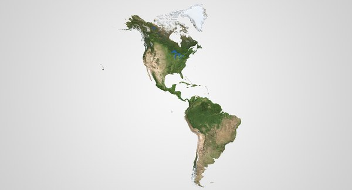

|  | América es uno de los seis continentes de la Tierra y el segundo de mayor tamaño luego de Asia. Ocupa una gran porción del hemisferio occidental del planta y se extiende desde el norte de Groenlandia hasta el extremo sur de Argentina y Chile. Tiene una extensión total de 42,5 millones de kilómetros cuadrados, lo que representa el 28,3 % del total de la superficie terrestre del planeta. |
||
¿Por qué se llama así? El nombre “América” proviene del nombre de Américo Vespucio, un navegante florentinoque habría sido el primero en sugerir que toda aquella masa de tierra era un continente nuevo por completo y no una porción no descubierta de Asia, como pensaban los españoles, portugueses e ingleses que la exploraron. Vespucio escribió varios informes sobre sus viajes, y esos escritos fueron ampliamente difundidos y leídos por otros exploradores y cartógrafos de la época. En 1507, un cartógrafo alemán llamado Martin Waldseemüller incluyó un nuevo continente en su mapa del mundo y lo nombró “América” en honor a Américo Vespucio.
|
|||